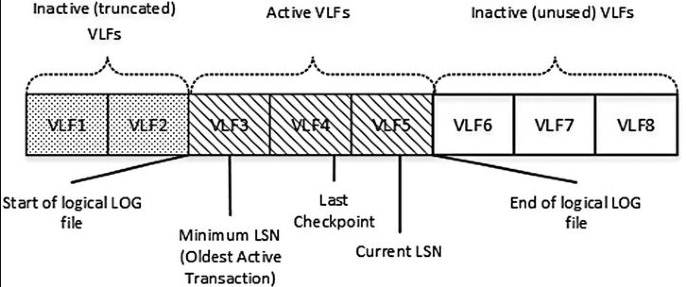
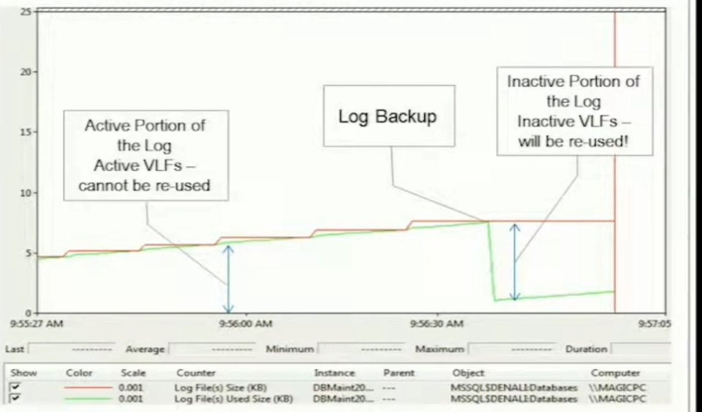

Worst Maintenance Practices
- Leaving default size and default path.
- Taking wrong actions and performing wrong maintenance (Mixing shrink, truncate, clear).
How the Transaction Log Works

- Log is a series of smaller "files" called virtual log files.
- Active VLF - There is a record of an opened transaction.
- Inactive VLF - No open transaction records, can be cleared in order to be re-used.
- Activity moves through log sequentially, fills the current VLF and goes to a next inactive cleared VLF.
- If there is inactive cleared VLF at the beginning of the file, it could be rolled over.
- If there none, physical transaction log file will auto-grow.
- To mark an inactive VLF for re-use, issue a back up log.

Excessive File Auto-Growth Causes:
- Numerous VLFs to be added - this can negatively affect performance of the log (slow backup, recovery, commits, writes to the file).
- Synchronous slight pause on auto-grow operation.
- Windows call to extend a file (may cause file fragmentation).
Creation of Transaction Log File and its VLFs
- Default size should be 25% of the total size of all data files created with the same CREATE DATABASE statement.
- New VLFs are created depending on the Growth Size and File Chunk rues.
| File Chunk | # of VLFs |
| <64MB | 4 |
| >=64MB and <1GB | 8 |
| >=1GB | 16 |
How to Reduce Inactive VLFs
- Run below script to check existing VLFs.
- Back up log to clear it.
- Shrink it to a minimum to reconfigure log file.
- Run first step to check if VLFs are cleared. If not, retry steps 2 - 3.
- Configure log file's initial size and auto growth.
- Best practice is not to let VLFs > 100.
- This can also aleviate/fix WRITELOG wait type.
DBCC LOGINFO(0) -- FileSize = KB -- Status: 2 = Active, 0 = Inactive
DBCC SHRINKFILE(2)